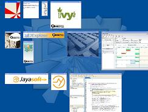

{kind=link}
Once invoked, the JExplose effect zoom out the internal frames and layout them, so that the user can see a thumbnail of all of them, and choose the frame he wants to bring to front. A small animation can be shown to move internal frames during the effect.
 This effect not only enhance your application efficacity, but also improve your whole application perceived quality
{kind=link}
This effect is inspired by the Expose effect which can be found on Mac OS X.
JExplose is available as a small jar (less than 80kB) which can be easily integrated with your application.
Finally, it doesn't do anything until it is invoked, thus not slowing your application at all.
Integration
Two kind of integration are available:Thunder
Use this kind of integration if you have use a custom subclass of JDesktopPane you do not want to customize for JExplose.You just have to obtain a JExplose instance (for example with the static getInstance() method, which returns a default instance, or by creating a new one with the animation and layout settings you want), and then call the explose method with the instance of your desktop.
Usually, it looks like this:
MyCustomDesktop desktop = a; JExplose.getInstance().explose(desktop);This kind of effect is slightly less performant than the second one: lightning.
Lightning
Prefer this kind of invocation if:- you usually used JDesktopPane and can change the class you use
- are ok to subclass the custom desktop you use, to make it an explosable desktop
As you see, this kind of integration is slightly more intrusive in your code, since it require a particular instance of desktop. But it is ok to use in most cases, and is easier and better performing than thunder.
Usually, using the lightning invocation looks like this:
ExplosableDesktop desktop = ...; desktop.explose();
Integration with your GUI
JExplose also provides:a swing action, for instance:
Action thunderAction = JExploseUtils.getThunderAction(desktop)and an easy to use key binding:
JExploseUtils.installThunderHotKey(desktop, KeyEvent.VK_F11)
You can even use the free mouse gesture library from smardec to invoke the effect on a mouse gesture (as in the demo):
final JDesktopPane desktop = ...;
MouseGestures mouseGestures = new MouseGestures();
mouseGestures.addMouseGesturesListener(new MouseGesturesListener() {
public void processGesture(String gesture) {
JExplose.getInstance().explose(desktop);
}
public void gestureMovementRecognized(String gesture) {
}
});
mouseGestures.start();